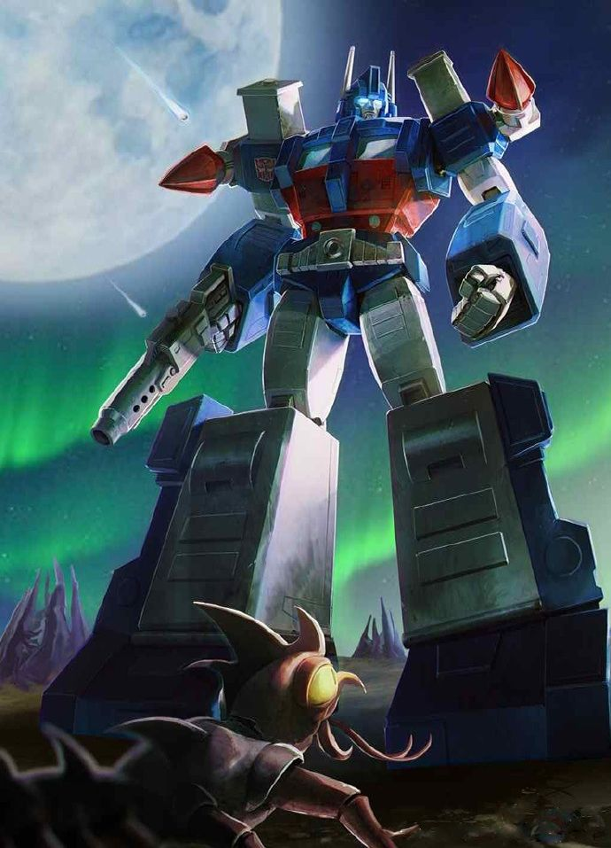

ARCHIVE #008
ULTRA MAGNUS
AUTOBOTChef des Wreckers • Commandant en second

MODE ALTERNATIF

MODE ROBOT
IDENTITÉ
ARMEMENT
- Forge de Solus Prime (marteau de guerre)
- Canon d'épaule
- Blasters et Missiles
PERSONNALITÉ
Ultra Magnus est un grand Autobot, généralement bleu et blanc,l'une de ses caractéristiques est sa légère ressemblance avec Optimus Prime qui lui vaut une puissance quasi-égale voire supérieure en fonction des séries. Ultra Magnus est généralement dépeint comme quelqu'un de courageux, fort, résolu et désintéressé, même s'il a toutes les qualités d'un leader, il préfère rester un soldat. Il est donc plus un leader de terrain qu'un leader spirituel, son rôle restant très important: tenir le front, protéger ses camarades et faire gagner du temps. Sa personnalité et son histoire peuvent cependant varier selon les continuités.
RELATIONS
Ennemi et Leader des Decepticons
Historien de Cybertron et mentor d'Ultra Magnus
Dans la continuité Aligned, ils partagent une relation de respect mutuel et une forte amitié, Ratchet réparant régulièrement ses blessures
Réincarnation de Megatron et némésis direct d'Ultra Magnus, cherchant à tout pris de le tuer et de s'emparer de la Matrice de Commandement
APPARITIONS
Première apparition dans la génération G1 (série et comics Marvel).
The Transformers: The Movie
Transformers: Animutant / Beast Wars
Transformers: Robot in Disguise
Transformers: Trilogie d'Unicron (Armada, Energon et Cybertron)
Comics IDW
Transformers: Animated
Transformers, premier film live-action. (Dans les films suivants et dans le jeu tiré du film)
Série de comics Shattered Glass
Transformers:Prime
Jeux Transformers: Trilogie de Cybertron (War For Cybertron, Fall Of Cybertron et Rise of the Dark Spark)
Transformers: Robot in Disguised (2015)
Bumblebee, film live-action dédié au personnage éponyme
Transformers: Cyberverse
Transformers: Trilogie de Cybertron (Siege, Earthrise et Kingdom)
Transformers: EarthSpark
Transformers: Rise of the Beast
Comics Skybound
Transformers: One, Orion Pax jusqu'à la fin du film et reçoit la Matrice de Commandement
Transformers: Cyberworld
Optimus Prime: Awakening, cxourt-métrage animé sortie après la ressortie du film Transformers: The Movie 40th Anniversary au cinéma, en l'hommage de Peter Cullen, son doubleur original depuis 1984
MULTIVERS
Version originale de la franchise.
Plusieurs versions dans les différentes continuités IDW.
Version des films live-action.
Version alternative où les rôles des factions sont inversés.